Part 1: Combining Meshes
This week I learned how to combine meshes. The objects I chose were a cactus and an owl which I downloaded from Thingiverse. I had this idea that I wanted the owl to be sandwiched in-between the cactus plant and it's pot, so it looked like it was stuck in the pot and wearing the cactus plant as a crown.
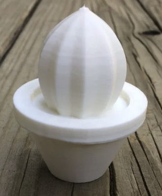
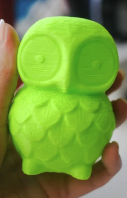
Thingiverse Owl
Thingiverse Cactus
Original cactus STL file from Thingiverse
Original owl STL file from Thingiverse
Finding the owl file was pretty easy, but I had a hard time finding a cactus file where the plant and cactus were one object. Usually the files had two objects, one for the pot and one for the cactus plant. After I found a single object cactus file, I imported both the cactus and the owl into Rhino. The objects were veryyyyyy different sizes, so I re-sized both to an appropriate in-between size.
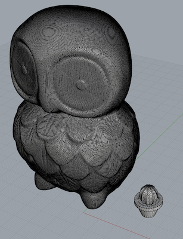
After that, I examined the quantity of mesh faces to see if either object should be reduced. Looking at the owl, I guessed that I would need to reduce mesh faces. I was able to reduce from 300,000+ to 20,000. When I inspected the cactus I learned that the cactus only had 1,694 faces so I didn't reduce it. Next, I used the ShowEdges command because the owl looked a little unusal at first in the shaded view. Luckily, both of my objects had 0 naked edges and 0 non-manifold edges!
To be on the safe side, I also ran both objects through the MeshRepair command to validate that they were both good meshes. The MeshRepair command confirmed that both objects were good meshes. Additionally, both had zero items to repair!.
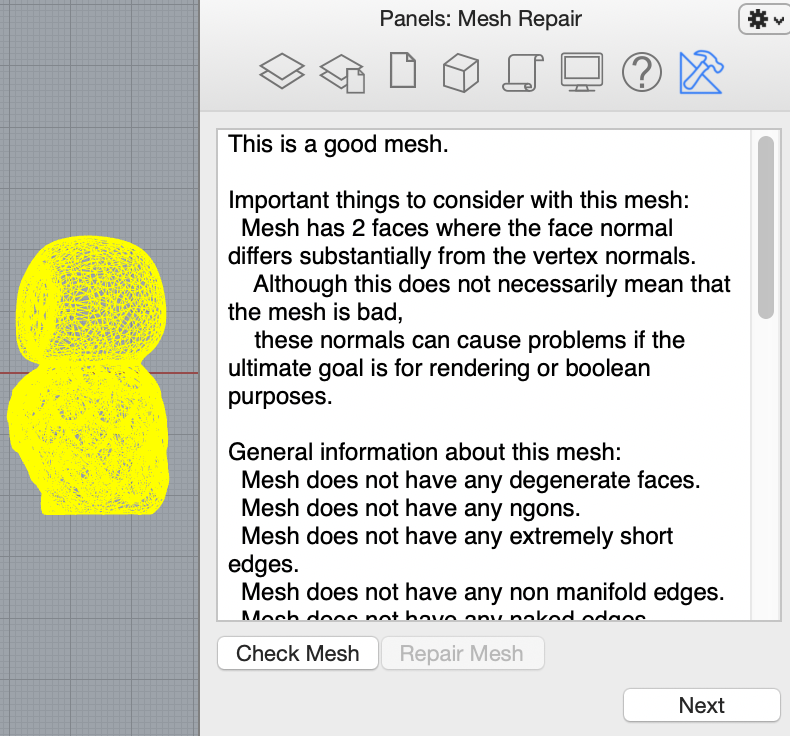
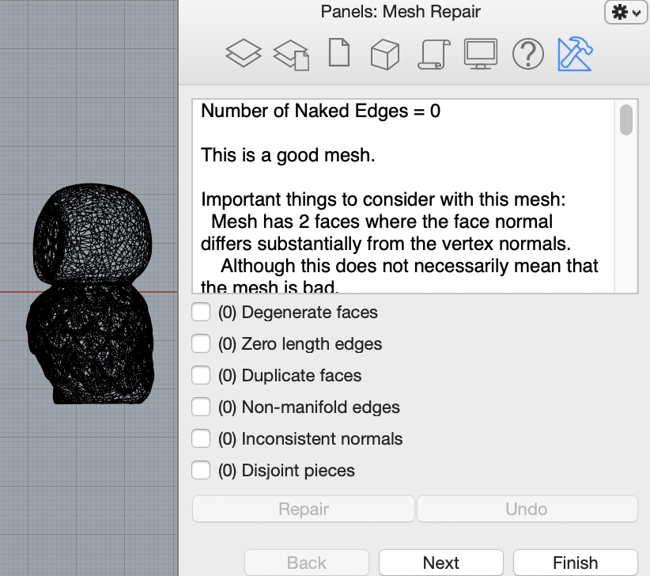
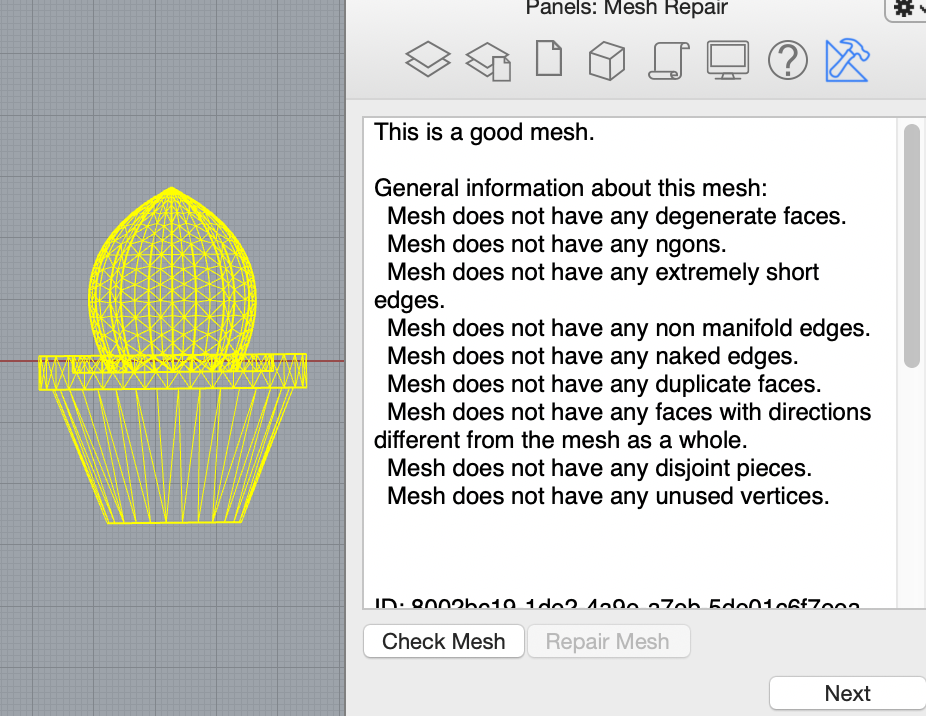

I then made a poly surface for the meshes. Because I wanted the owl to be sandwiched between the cactus object, once I added the poly surface to the cactus I copied the cactus and the surface, and then flipped the direction of the surface, so I would have one mesh object of the plant, and one object of the pot. I then used the MeshBooleanDifference command to get the size and shape of the objects to begin combining.
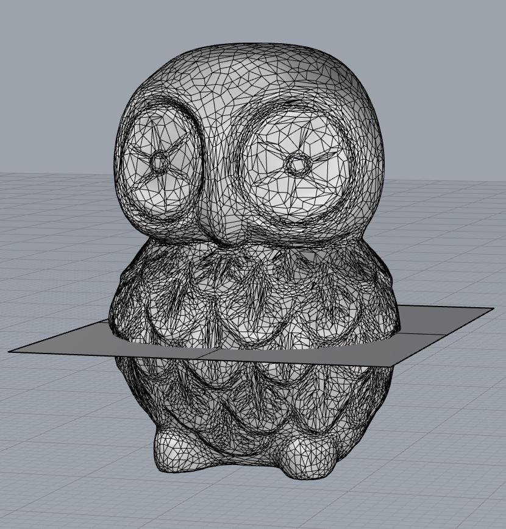
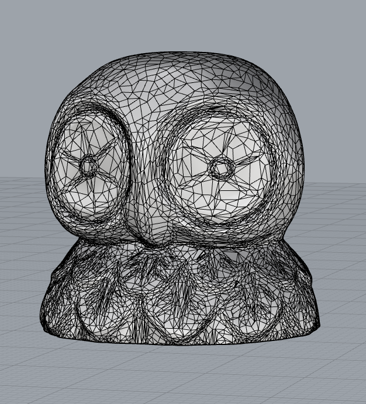
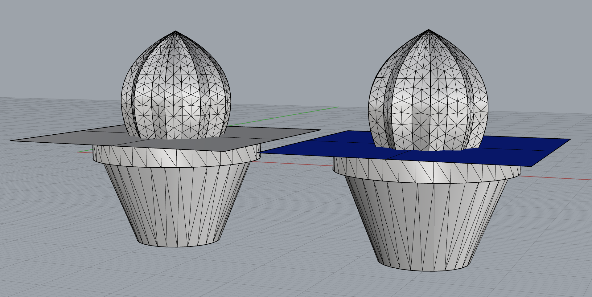
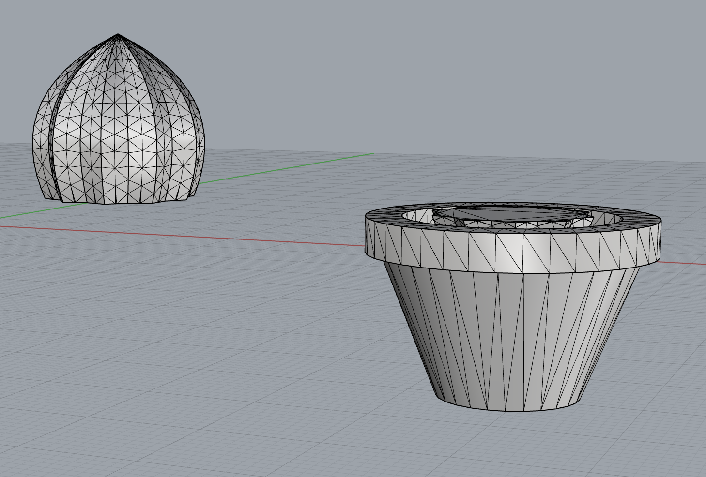
Using the MeshtoNURB command for all three objects I was able to successfully turn them into polysurfaces. I then aligned all three objects in the top view using concentric align. Once all three pieces were placed where I wanted, I used the BooleanUnion command. I examined the new object and it was closed. I exported it with a 0.001mm tolerance.
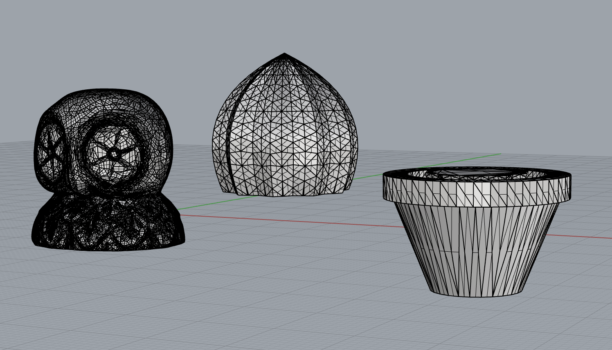 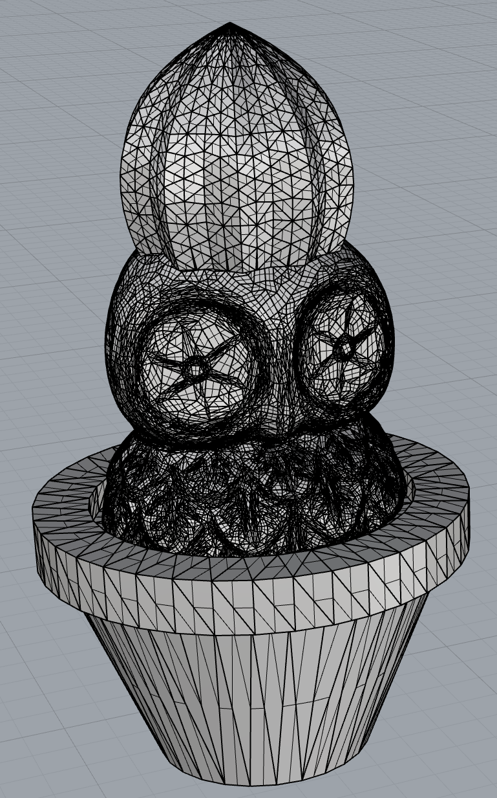
I then sliced the file in Cura using standard quality settings, and standard support with max resolution and max travel resolution increased to .5, and then I printed my new object.
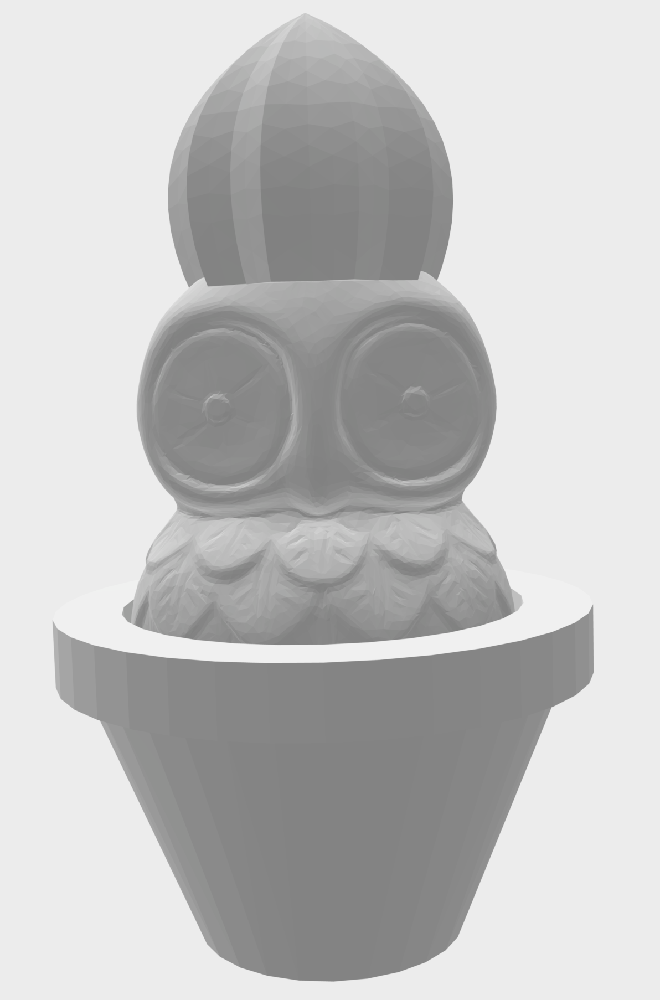

FINAL STL
FINAL RHINO
Part 2: Beginning the Lamp
Additionally, this week, I started my lamp project. I had a few ideas before the one I landed on. Initially I was thinking about a shutter inspired construction that had many blades and faces that you could rotate individually. When I did a test print I realized this fixture would be much bulkier than I wanted. Next, I thought about a rotating ball sitting on top of a cylinder, similar to a table top disco light, so I printed out a fixture that could rest in the light buld attachment area, which had a nested tunnel where the ball could rest. Before I could figure out what the base looked like, my inspiration changed again...
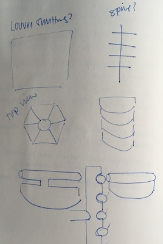 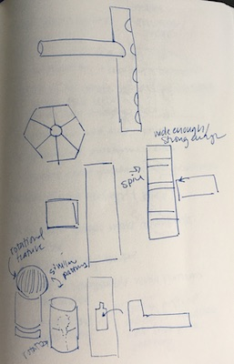 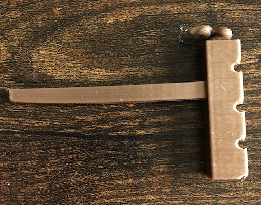 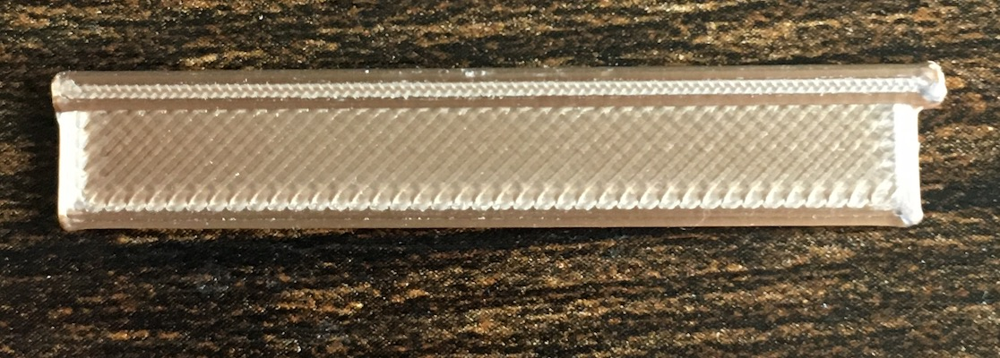 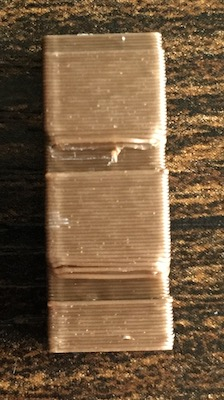 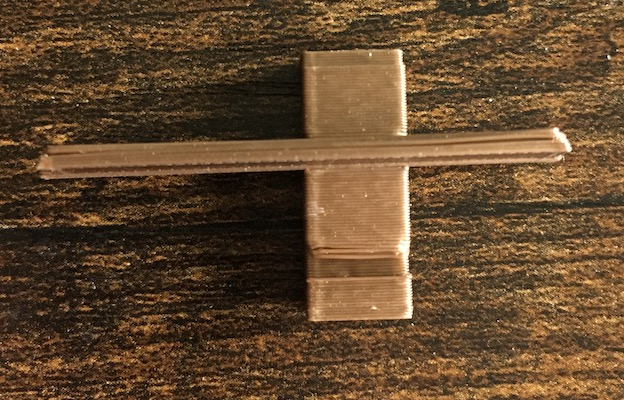 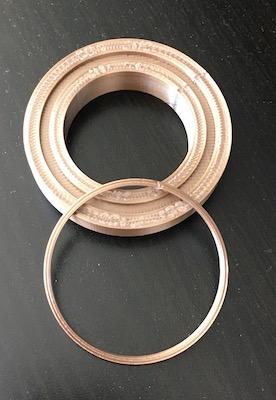
My inspiration for this light fixture is a night sky time lapse.
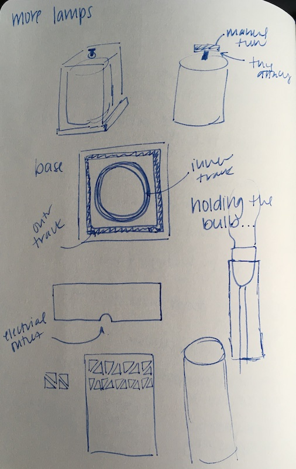
First, I wanted to focus on the structure to hold up the bulb. Since I wanted a table top light, I decided to create a thick tube with a hole in the bottom for the cord to funnel through. I measured the outside of the bulb attachemnt with my calipers and printed a tube based on those measurements. Luckily, it fit!
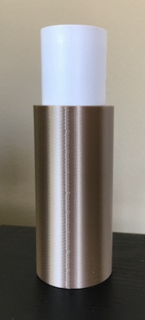
Next, I decided to tackle the base of the lamp. I decided I wanted a double layer effect, with the possibility that the inner layer could rotate, simulating the time lapse, while the contrast of different patterns between the two layers would create an everchanging light pattern. I liked the idea of having a base where each layer could sit in a ridge on the base. I guestimated how big I wanted the base to be, then I created a square tunnel .25cm wide for the outer box, and a .25cm wide tunnel for the cylindrical inner layer to rest. I also had to make sure I had an open hole in the middle for the bulb stand to rest. I aligned everything concentrically in the top view so it was centered.
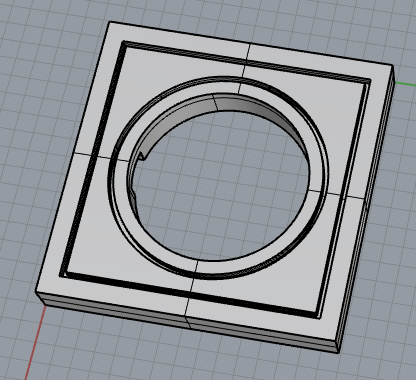 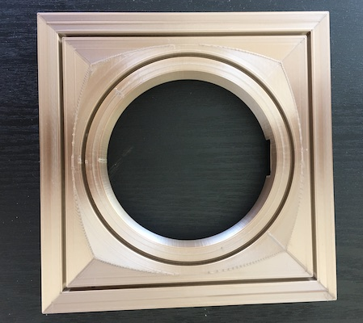 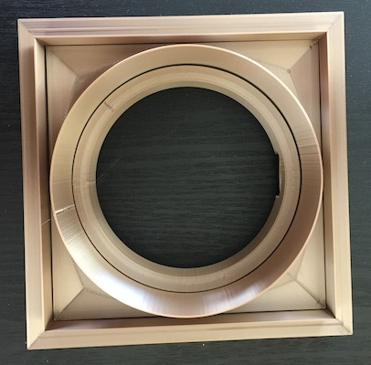
Next, I decide to make a trial height for the cylinder inner layer and the square outer layer. The trial layer for the cylinder worked well, but the box did not. It kept lifting up and did not print tightly. I was about to give up and change the design when I realized that maybe rafting the box would work, and I was right. Now, I am here. I need to print out the final outer box with pattern and inner cylinder with pattern. The height of layers will be about 8" tall. The square box will have a hole in the top of it for the turning knob for the cylinder layer to poke through to function.
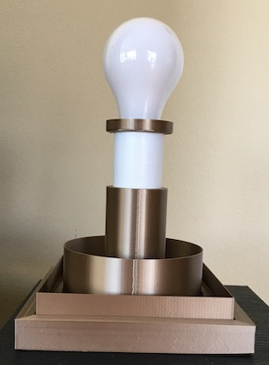
Here are some images of the inspiration I am using for the cutout pattern on my layers.
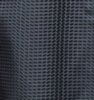
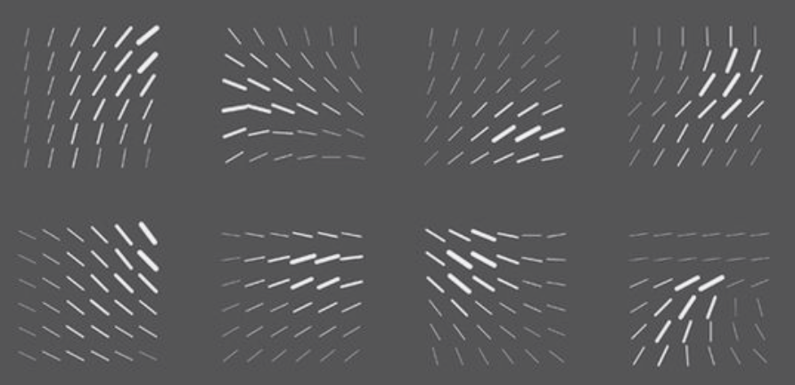
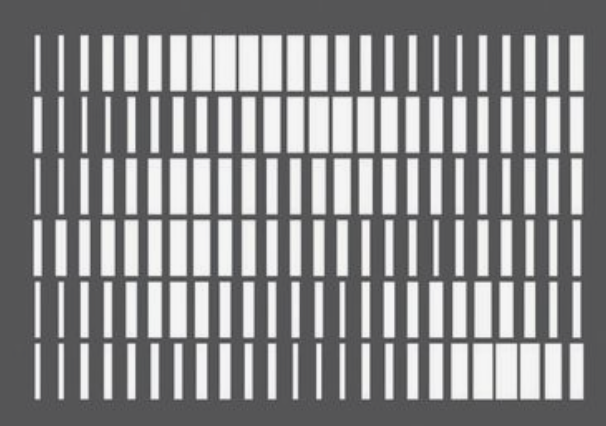
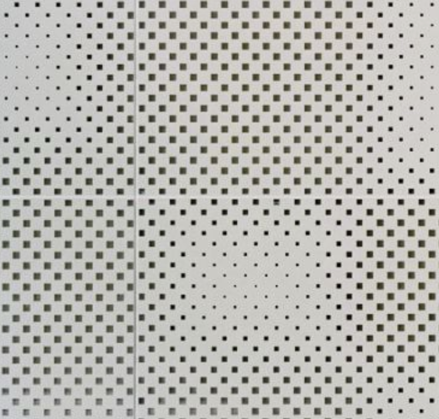
Link to inspiration images